<ion-header>
  <ion-navbar>
  </ion-navbar>
</ion-header>
 
<ion-content padding class="content-background">
  <div class="blacklogo-div">
     
  </div>
  <p class="blacklogo-text">
    Crystal Cheque 
  </p>
  
  <p class="big-labels">
    <!-- <ion-icon name="checkmark-circle"> -->  You're all set !<!-- </ion-icon> -->
  </p>
  <p class="medium-labels">
    Thanks for registering at Crystal Cheque
  </p>
  <button ion-button round full class="next-button topMargin" (click)="toJournal()">
    Create Your First Journal 
  </button>
  <button ion-button round full class="next-button" (click)="toDashoard()">
    Skip To Dashboard 
  </button>
</ion-content>
